Every garment, one photo.
Pressed is an iPhone app for your clothes. Photograph each piece once; folded is fine. It cuts it out, files it by type and proposes what to wear today.
- iPhone, iOS 17 or later
- Free, no account
- App Store, to be announced
The 14 sections, in the app's order. In black, the nine that the demo wardrobe below fills.
- Coats
- Hoodies
- Jumpers
- T-shirts
- Dresses
- Trousers
- Skirts
- Trainers
- Shoes
- Watches
- Bracelets
- Glasses
- Backpacks
- Accessories
- Dark denim jacketCoats
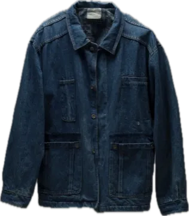
- Sand hoodieHoodies
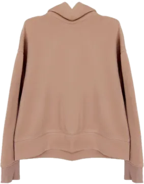
- Striped knit jumperJumpers
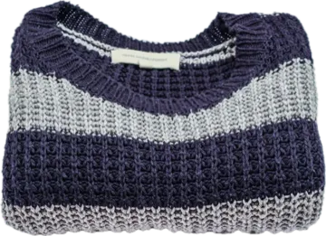
- Plain white T-shirtT-shirts
- Straight jeansTrousers
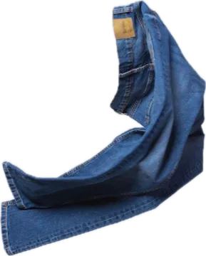
- White running trainersTrainers
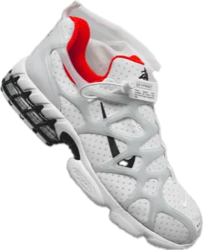
- Black analogue watchWatches
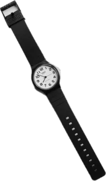
- Round sunglassesGlasses
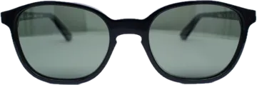
- Camouflage backpackBackpacks
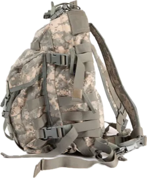
The demo wardrobe inside the app: nine ordinary photos, cut out by Pressed. Slide it sideways for the rest.
The photo is the hard part. It takes one.
Lay the garment down, even folded, and take the picture. Pressed lifts it off the background on the iPhone itself, the same way Photos lifts a subject, and files it under its section.
Want the catalogue picture instead? Buscar en tienda opens Zara, H&M, Mango, Uniqlo or a Google Lens search inside the app. Tap the right product and Pressed keeps the store photo, the name and the price. Saw something on a shop's site? Share it to Pressed from Safari and it lands in your wishlist.
- 1photo per garment
- 14sections, plus a wishlist
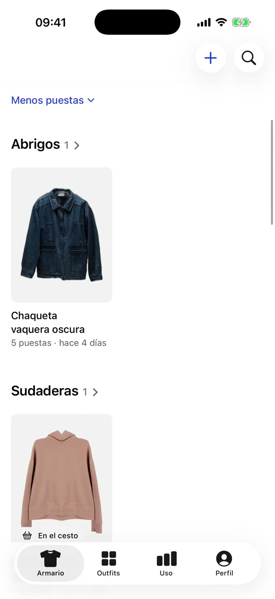
An outfit for today, from the weather.
Once a day Pressed picks an outfit from what you own. It follows colour and formality rules and the temperature outside, so a cold morning gets a jumper and not a T-shirt.
Me lo pongo logs it as worn. Otra deals another. A Home Screen widget shows the same outfit, prepared overnight. The weather comes from Apple and only if you allow location.
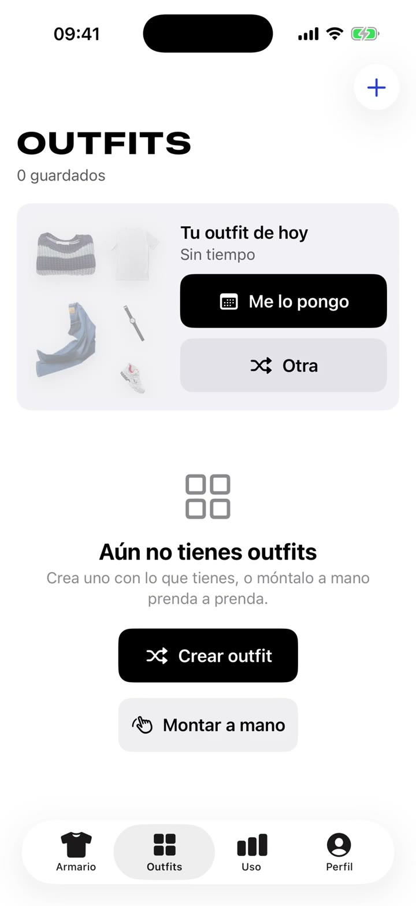
A stylist that learns your taste.
Outfits are not dealt at random. Pick one of 11 styles, from Preppy to Streetwear, or write your own, and Pressed shows three looks made from your own clothes before you commit.
No me gusta este moves the style away from that look. Every outfit you save or log as worn counts as a vote for how those pieces go together.
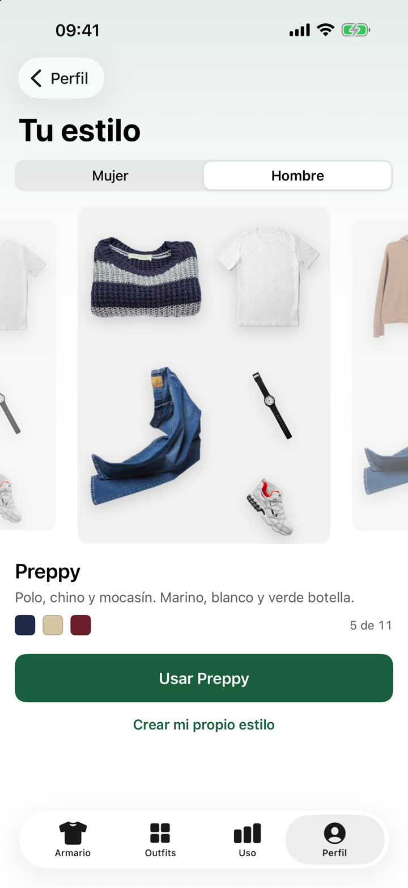
Shuffle what you own.
Crear outfit deals a full look for an occasion: party, office, university, sport. Lock the pieces you like, tap one to swap it, shuffle the rest. Or lay the outfit out by hand.
Saved outfits go into folders. Preparar maleta plans a trip: one outfit per day, with the weather at the destination.
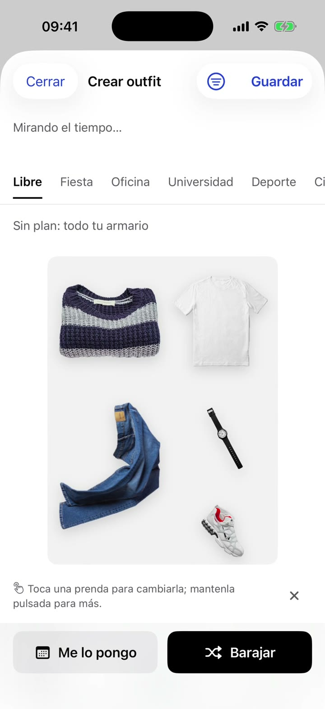
What you really wear.
Every outfit you log goes on a calendar. From it Pressed works out what you wear most, what never leaves the drawer and the cost per wear of each piece.
There is a laundry basket too. After a few wears a piece goes in and stops showing up in outfits, until Lo he lavado todo brings it all back.
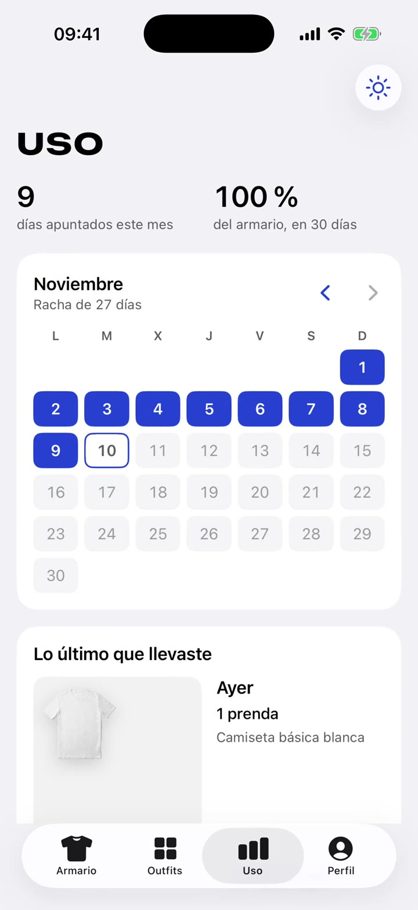
It stays on your iPhone.
Your wardrobe is stored on the phone and nowhere else. There is no Pressed server holding your photos.
- No account
- No sign-up, no ads and no tracking. You open the app and start taking photos.
- A backup you own
- One .zip with every garment and its photos. Keep it wherever you like and restore it on another iPhone. There is a CSV and a JSON export too.
- Delete everything
- One button in Perfil wipes the wardrobe. The full detail is in the privacy policy, in Spanish.
Help
Something not working, or an idea? Write to me and I will answer within a few days. English or Spanish, both are fine.
nsanbenitop@gmail.com- Is the app in English?
- Not yet. Every screen is in Spanish for now, which is why the button names on this page are in Spanish.
- How do I move my wardrobe to a new iPhone?
- Perfil, then Tus datos, then Hacer una copia con fotos. Send the .zip to the new phone and choose Restaurar una copia there.
- Today's outfit says "Sin tiempo".
- Pressed has no location access, so it cannot get the weather. Allow location for Pressed in Settings and the outfit will follow the temperature again.
- Where is the privacy policy?
- Here, in Spanish.
Built for my own wardrobe. To be announced.
Pressed runs on my iPhone today. There is no release date yet: the download link goes here the day Apple approves it, and not before.